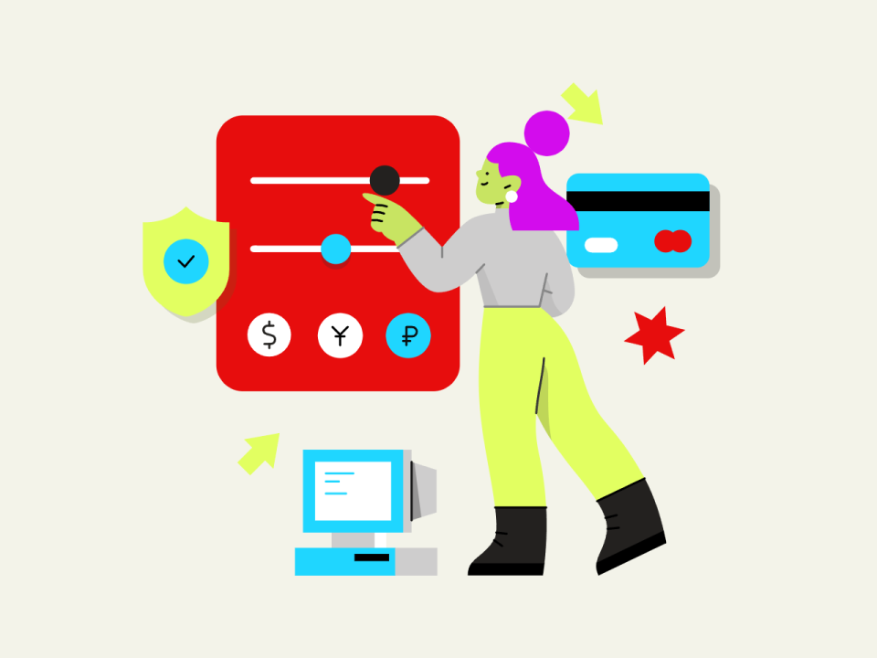

Optimizacion de imagenes para dispositivos Moviles:Estrategias avanzadas utilizando Medias Queries
En la era actual de la web, la optimizacion de imagenes es esencial para garantizar una experiencia de usuario fluida en dispositivos moviles. En este articulo exploraremos estrategias avanzadas para entregar imagenes de manera eficiente en nuestro arsenal de diseño
Articulo de Interés
RWS Media QueriesCss Flexbox
CSS Media Queries
Cursos de tu interes

Diseñador de experiencia de usuario
En esta capacitacion aprenderas en como consiste la experiencia de usurio (UX) y como utilizar las herramientas de esta area para obtener preductos digitales que sean funcionales, intuitivos y que impactena tu usuario final

Evaluador de experiencia de usuario
En este curso evaluaras la aplicacion , programa o plataforma que hayas diseñado o quieras mejorar mediante distintas mediciones y tecnicas que te permitan conocer el nivel de usuabilidad de tu producto de software